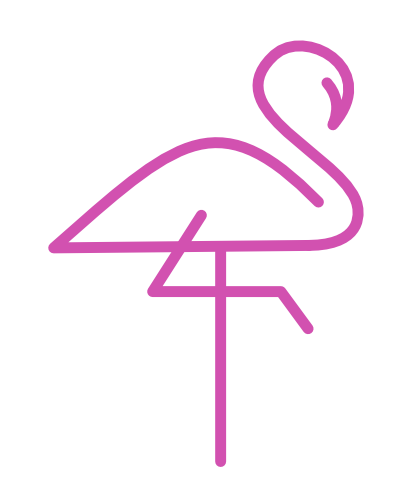
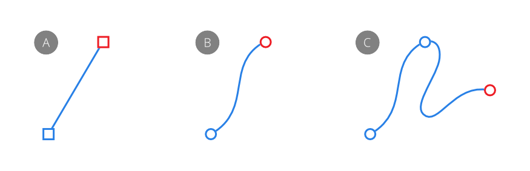
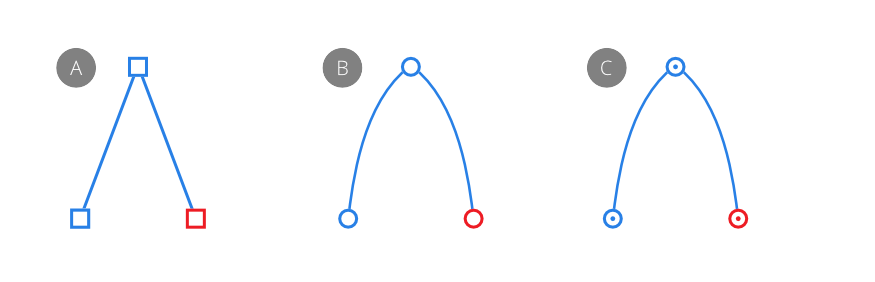
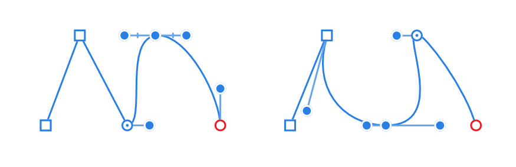
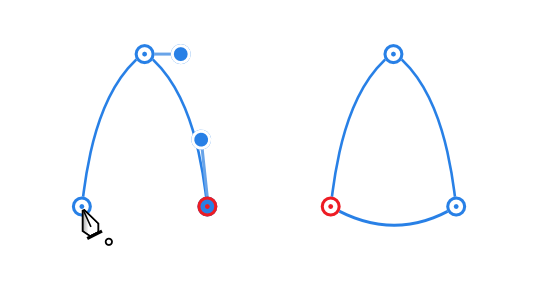

When you want to draw vector shapes and curves you'll need to use the Pen, Pencil, Vector Brush and Shape tools. Editing curves and shapes is done with the Node tool or the as you draw.

A curve is an open path that has a distinct start and end. These end stops are defined by nodes. A curve with just two nodes is referred to as a line.
The path between nodes is known as a segment and can be straight (A) or arched (B). Complex curves are created from multiple nodes connected by segments (C). Lines and curves generally have a stroke applied.

The type of node controls the connected segments. There are three basic types of node:

When drawing curves, any combination of nodes can be used. Each node also has control handles. These appear when the node is selected. The length and slope of the control handles determine the shape of the segment. A node can be edited at any time.
There are advantages to being able to add multiple curves—for example, if you want to make use of odd-even winding for filling with multiple curves.

A shape is a closed path with no discernible start or end. It is made up of multiple nodes and segments.

You can also easily create geometric shapes using the Shape tools. These have special properties that enable you to quickly create otherwise difficult to draw shapes, such as circles, rectangles and polygons.